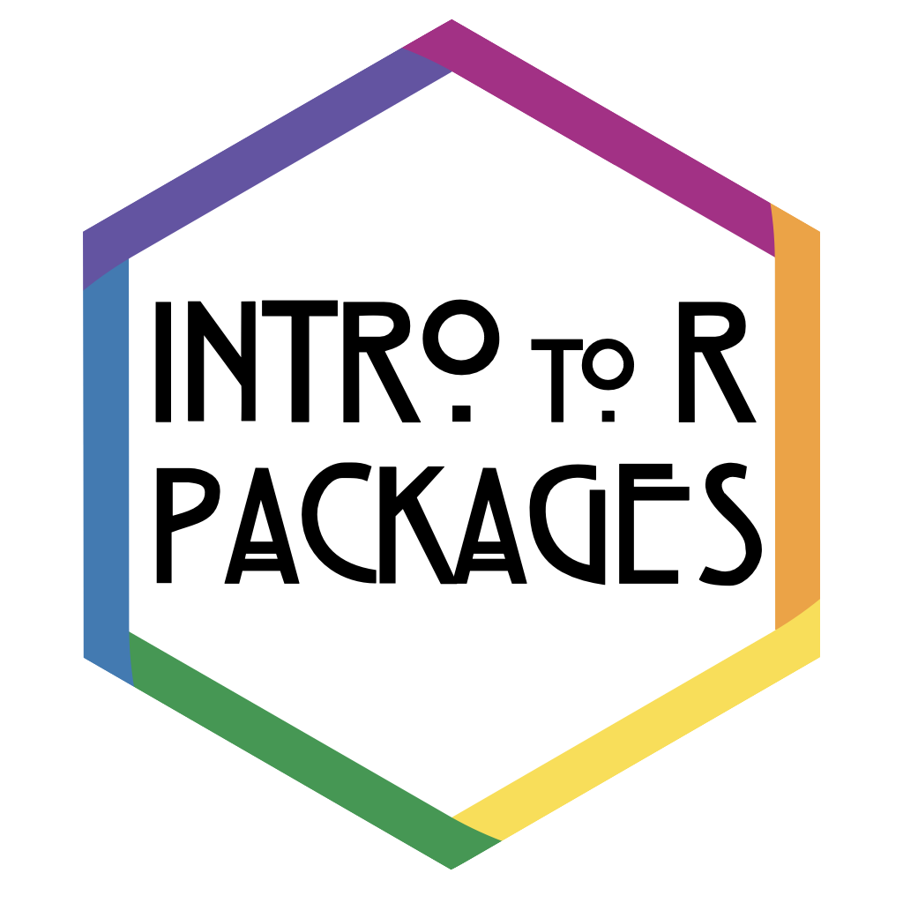

Coding Club: Creating an R Package
Overview

This book will serve as a record of the activities of the 2022 PsyTeachR Coding Club at the University of Glasgow School of Psychology & Neuroscience. It is in progress and will be updated regularly.
Making an R package develops generic coding skills and gives you valuable insight to how R works. We’ll cover setting up a package project, creating functions, documenting them with roxygen, creating vignettes, unit testing, package testing, version control with git, and distribution with github.
You will need only very basic R skills and a willingness to learn. The only people this would not be suitable for are those with zero previous experience in R (unless you know you pick up coding languages quickly). If you can install packages and have written an analysis script, you’ll be fine.
Register for free at EventBrite to help us keep organised and let us know a little bit about your experience. Space is unlimited, so don’t worry if you can’t make all of the dates. We’ll record the sessions and make them public ASAP so you can catch up if you miss the live session.
Tentative Schedule
-
Setting up a package project (2022-10-05)
Create a package project and edit the default files. Well start using the most helpful package, usethis.
-
Adding Data (2022-10-12)
Add datasets to your package and document them with a codebook. You can use our demo data or your own.
-
Custom Functions (2022-10-19)
Learn to write custom functions and include them in your package.
-
Documentation (2022-10-26)
Write function documentation using the roxygen format. This is what creates the help documentation for functions.
-
Unit Tests (2022-11-02)
Write unit tests for your custom functions using testthat.
-
Analysis Vignette (2022-11-09)
Include your study analysis code as a package vignette.
-
Pkgdown Websites (2022-11-16)
Create a package website using pkgdown.
-
Package Maintenance (2022-11-23)
How to run CMD-check to make sure everything is put together right, and how to troubleshoot the inevitable problems.
-
Sharing your package (2022-11-30)
Set up a github account and make a package repository to share your package and pkgdown website.
-
Review and next steps (2022-12-07)
Whatever we didn’t get to. We’ll also discuss how to continue your learning.
Resources
- R Packages by Hadley Wickham and Jenny Bryan
- usethis
- testthat
- pkgdown
- vertical